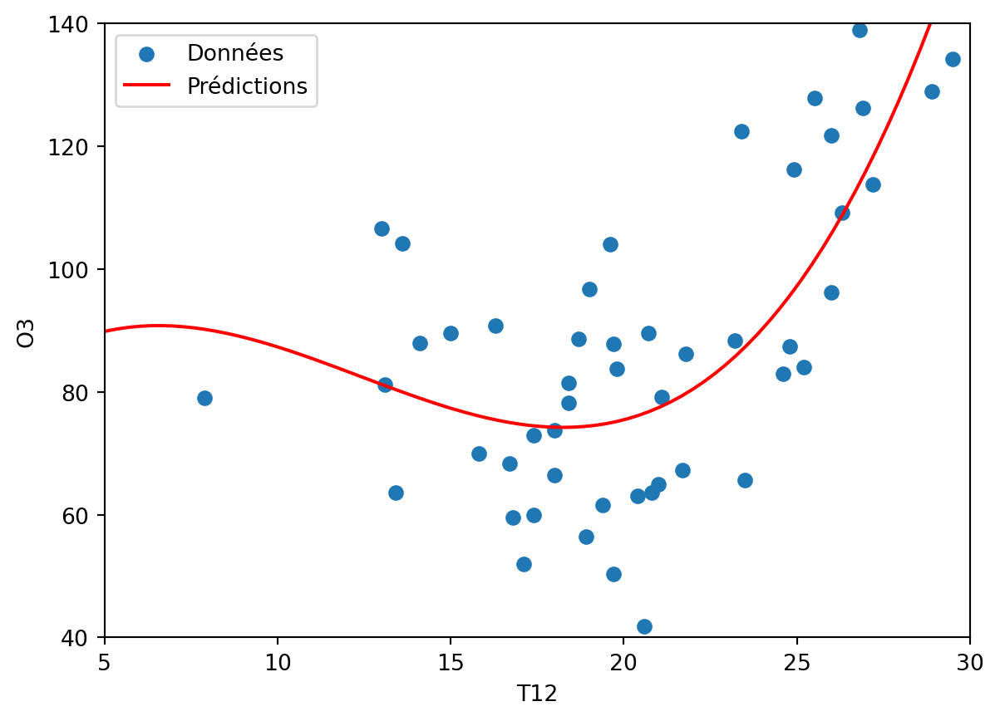
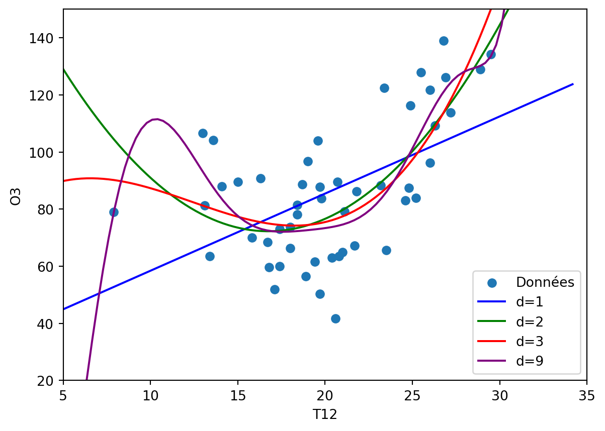

import pandas as pd
import numpy as np
import statsmodels.api as sm
import matplotlib.pyplot as plt5 Régression polynomiale et régression spline
Exercice 1 (Questions de cours)
- C
- A
- A
- B
Exercice 2 (Fonction polyreg)
On importe les données :
ozone = pd.read_csv("../donnees/ozone_simple.txt", sep=";") sdT12 = np.std(ozone['T12'], ddof=1) print(sdT12)4.674638477781911On crée la grille
grillex = np.linspace(ozone['T12'].min() - sdT12, ozone['T12'].max() + sdT12, 100)On transforme en data frame :
df = pd.DataFrame({'T12': grillex})On effectue une regression polynomiale de degré 3 :
basepoly = np.column_stack([ozone['T12']**i for i in range(1, 4)]) newval = np.column_stack([df['T12']**i for i in range(1, 4)]) dfpoly = pd.DataFrame(basepoly, columns=[f'T12^{i}' for i in range(1, 4)]) dfpoly['O3'] = ozone['O3'] X = sm.add_constant(dfpoly.drop(columns='O3')) Y = dfpoly['O3'] regpoly = sm.OLS(Y, X).fit() print(regpoly.summary())OLS Regression Results ============================================================================== Dep. Variable: O3 R-squared: 0.536 Model: OLS Adj. R-squared: 0.505 Method: Least Squares F-statistic: 17.69 Date: Sat, 01 Feb 2025 Prob (F-statistic): 8.92e-08 Time: 18:01:00 Log-Likelihood: -209.96 No. Observations: 50 AIC: 427.9 Df Residuals: 46 BIC: 435.6 Df Model: 3 Covariance Type: nonrobust ============================================================================== coef std err t P>|t| [0.025 0.975] ------------------------------------------------------------------------------ const 69.2720 85.128 0.814 0.420 -102.081 240.625 T12^1 7.4578 14.405 0.518 0.607 -21.538 36.454 T12^2 -0.7730 0.784 -0.986 0.330 -2.352 0.806 T12^3 0.0208 0.014 1.519 0.136 -0.007 0.048 ============================================================================== Omnibus: 2.509 Durbin-Watson: 1.466 Prob(Omnibus): 0.285 Jarque-Bera (JB): 1.745 Skew: 0.251 Prob(JB): 0.418 Kurtosis: 2.235 Cond. No. 4.15e+05 ============================================================================== Notes: [1] Standard Errors assume that the covariance matrix of the errors is correctly specified. [2] The condition number is large, 4.15e+05. This might indicate that there are strong multicollinearity or other numerical problems.On prévoit sur lagrille :
dfnewval = pd.DataFrame(newval, columns=[f'T12^{i}' for i in range(1, 4)]) dfnewval = sm.add_constant(dfnewval) prev = regpoly.predict(dfnewval) plt.scatter(ozone['T12'], ozone['O3'], label='Données') plt.plot(grillex, prev, color='red', label='Prédictions') plt.xlabel('T12') plt.ylabel('O3') plt.xlim(5,30) plt.ylim(40,140) plt.legend() plt.show()
Création de la fonction :
def polyreg(ozone, degre=3): # Calculer l'écart-type de la colonne T12 sdT12 = np.std(ozone['T12'], ddof=1) # Créer la grille grillex = np.linspace(ozone['T12'].min() - sdT12, ozone['T12'].max() + sdT12, 100) # Transformer en DataFrame df = pd.DataFrame({'T12': grillex}) # Créer les termes polynomiaux de degré 3 basepoly = np.column_stack([ozone['T12']**i for i in range(1, degre + 1)]) # Prédire les nouvelles valeurs polynomiales newval = np.column_stack([df['T12']**i for i in range(1, degre + 1)]) # Créer le DataFrame pour la régression dfpoly = pd.DataFrame(basepoly, columns=[f'T12^{i}' for i in range(1, degre + 1)]) dfpoly['O3'] = ozone['O3'] # Effectuer la régression polynomiale X = sm.add_constant(dfpoly.drop(columns='O3')) Y = dfpoly['O3'] regpoly = sm.OLS(Y, X).fit() # Prédire les nouvelles valeurs dfnewval = pd.DataFrame(newval, columns=[f'T12^{i}' for i in range(1, degre + 1)]) dfnewval = sm.add_constant(dfnewval) prev = regpoly.predict(dfnewval) return grillex, prev
Exercice 3 (Fonction polyreg (suite)) On applique la fonction précédente :
ozone = pd.read_csv("../donnees/ozone_simple.txt", sep=";")
# Tracer les données originales
plt.scatter(ozone['T12'], ozone['O3'], label='Données')
plt.xlim(0, 35)
plt.ylim(0, 150)
# Effectuer les régressions polynomiales et tracer les lignes
colors = ['blue', 'green', 'red', 'purple']
degrees = [1, 2, 3, 9]
for i, deg in enumerate(degrees):
grillex, prev = polyreg(ozone, degre=deg)
plt.plot(grillex, prev, color=colors[i], label=f'd={deg}')
# Ajouter la légende
plt.legend(loc='lower right')
plt.xlabel('T12')
plt.ylabel('O3')
plt.xlim(5,35)
plt.ylim(20,150)
plt.show()
Exercice 4 (Matrice bande) Considérons la matrice \(X_B\) du plan d’expérience obtenue à partir d’une variable réelle \(X\) transformée dans \(\mathcal{S}_{\xi}^{d+1}\) . Cette matrice est composée des \(d+K+1\) fonction de base notée \(b_j\) et où \(K\) est le nombre de noeuds intérieurs et \(d\) le degré.
Dans le cours, il est indiqué que les fonctions de base \(b_j\) et \(b_{j+d+1}\) en conservant l’ordre des fonctions. Donc \(b_1\) est orthogonale à toutes les fonctions \(b_j\) avec \(j>d+1\), idem pour \(b_2\) avec \(j>d+2\).
En faisant donc le calcul \(X_B'X_B\) on obtient une matrice bande et donc les termes \(a_{ij}\) sont nuls quand \(j>i+d+1\).
On en déduit que les paramètres estimées \(\hat \beta_k\) ne sont pas corrélés avec les \(\hat \beta_j\) dès que \(j>k+d+1\). XB est une matrice bande.